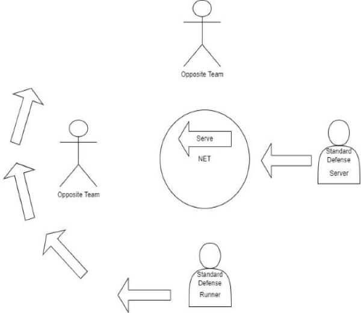
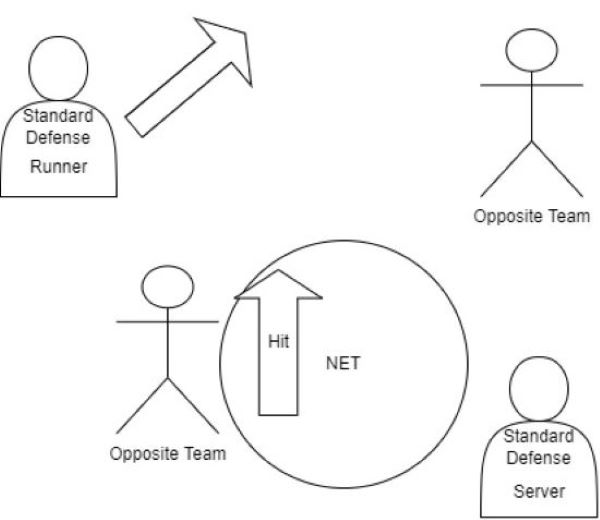

What Is Standard Defense?
Standard Defense is the most common defense used in spikeball. This defensive strategy requires some basic spikeball knowledge and awareness. In standard defense the team member who is not serving is the runner and the team member who is serving is the trailer. For this strategy one must expect the opposing team to take their 3 hits and not go on net early. The runner will identify the strong hand of the hitter and move to read their hard hit. The trailer will go close to the net and try to read any soft hits or drops that the opposing team might put on.
Pros
- Helps with long rallys
- Increases spikeball knowledge
- Adaptable to multiple hit styles
- Great way to start thinking about defense
Cons
- Soft hits are hard to get
- Where the ball is hit is dependant on where the set is
- Forces long plays to the net which are harder to put on.

